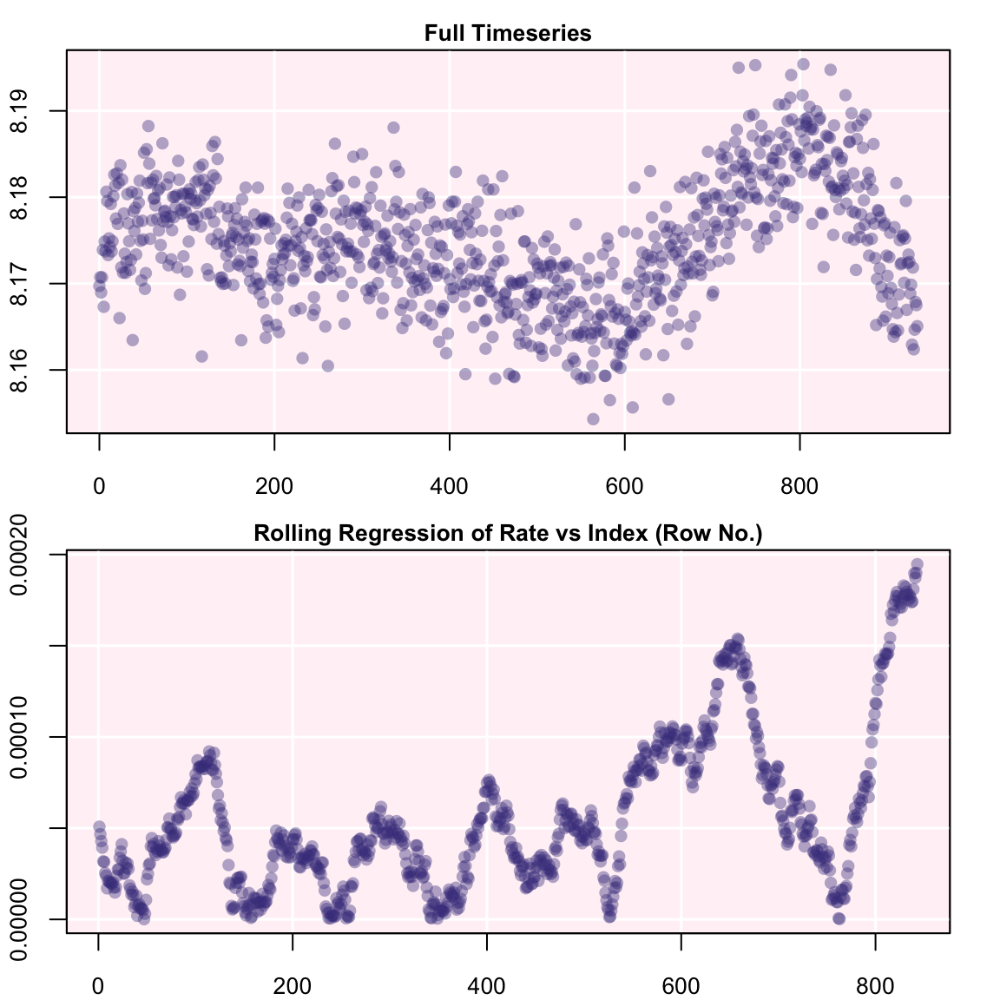
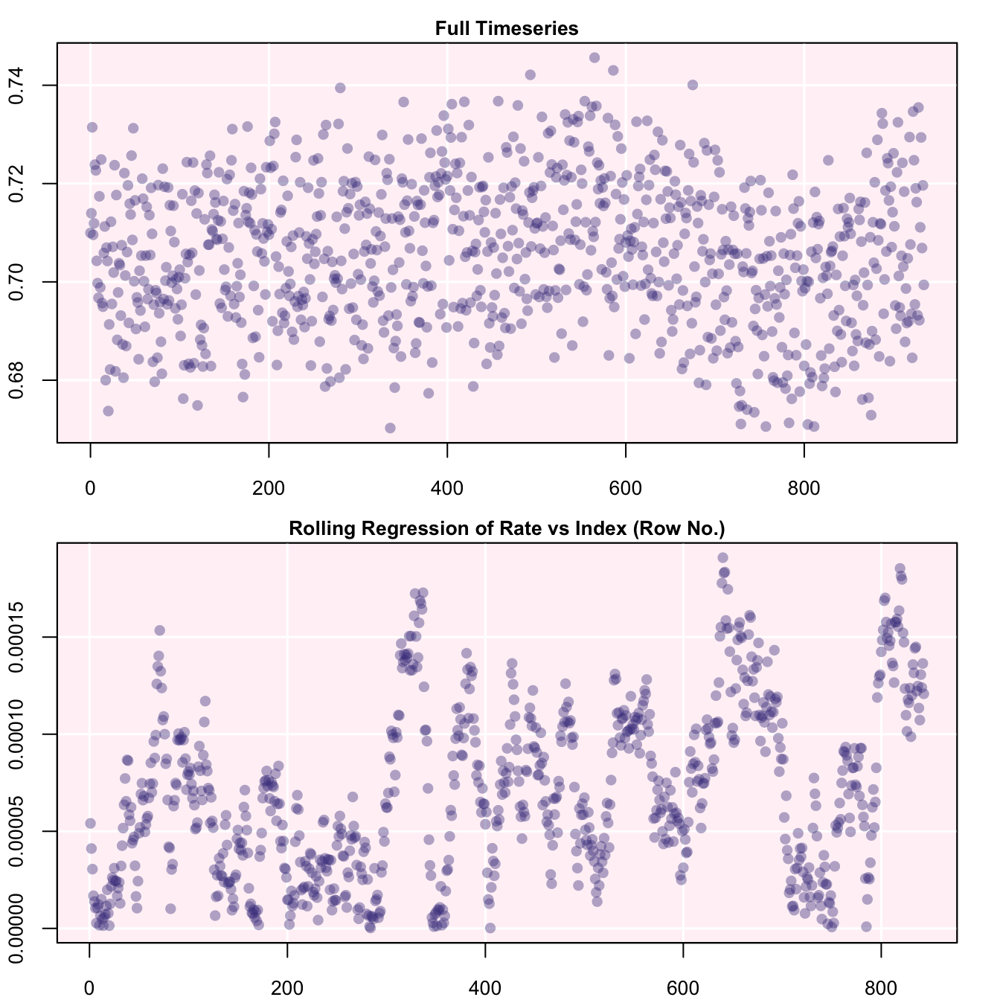
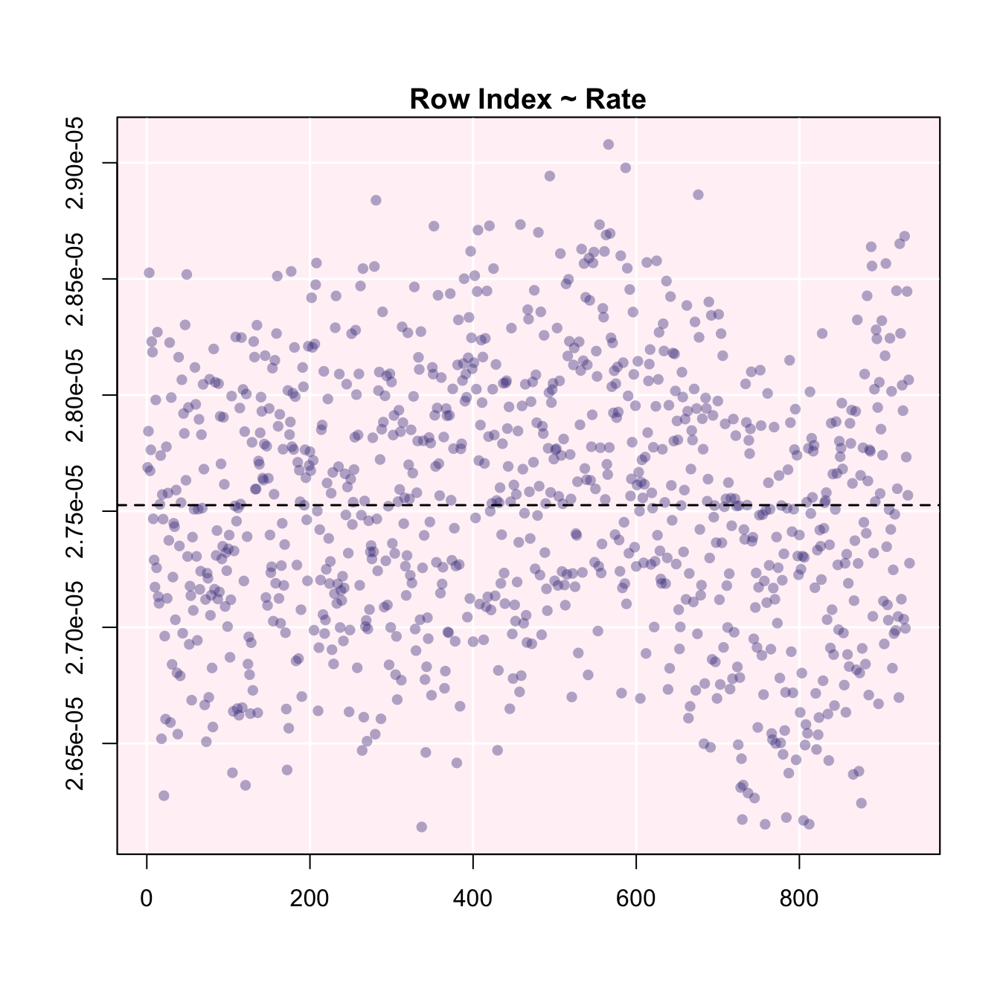
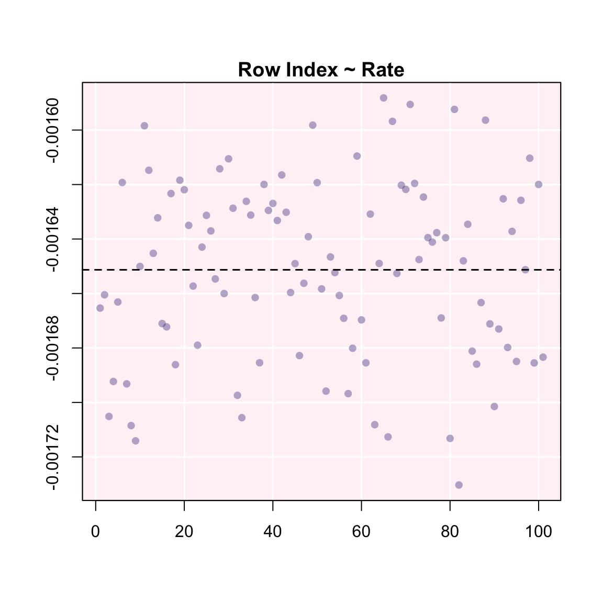

Flowthrough respirometry differs from other methods in that oxygen depletion is measured from a known continuous flow of water through a respirometer, rather than a known volume, typically after the system has achieved equilibrium. In this method, two oxygen concentrations are needed; ‘upstream’ and ‘downstream’ of the experimental chamber, or inflow and outflow concentrations. The inflow concentration is typically a known fixed value and often not continuously monitored, such as fully air-saturated water, or water from a header tank of controlled oxygen concentration. The difference between inflow and outflow concentrations, the \(O_2\) delta, and the flow rate allow calculation of the uptake by the specimen.
The example data, flowthrough.rd, contains measurements of oxygen consumption in a species of chiton, (Mopalia lignosa, Carey, unpublished). Detailed information about the data, including its source and methods, can be obtained with the command ?flowthrough.rd.
library(respR)
data("flowthrough.rd")
head(flowthrough.rd)
#> time o2.out o2.in o2.delta
#> 1 0 8.169730 8.879693 0.7099636
#> 2 1 8.170744 8.884703 0.7139588
#> 3 2 8.168974 8.900421 0.7314472
#> 4 3 8.170722 8.880303 0.7095818
#> 5 4 8.173901 8.885802 0.7119012
#> 6 5 8.167307 8.891156 0.7238484We can see this dataset contains time values, both outflow and inflow \(O_2\) concentrations, and an \(O_2\) delta, which is simply the difference between inflow and outflow. The \(O_2\) delta column is not required; we include it here to show an exploratory step in the next section. While any flowthrough data can be analysed in the calc_rate.ft function, exploring flowthrough data in inspect_data requires a 3 column data frame of time, outflow \(O_2\), and inflow \(O_2\). Therefore the user should include all three, even if inflow \(O_2\) is a column of a single fixed value. In this example it varies, but not significantly from a mean value of 8.88.
Continuous flowthrough data can be inspected for common errors using the inspect_data function, but because these data will be slightly different we need to use different input operators. By default, inspect_data assumes Time data in column 1 and \(O_2\) data in column 2. For flowthrough data we typically want to look at the outflow O₂ data, which is in column 2 here, so we do not have to change these defaults:
inspect_data(flowthrough.rd)
#> o2.delta : num [1:935] 0.71 0.714 0.731 0.71 0.712 ...
#> o2.in : num [1:935] 8.88 8.88 8.9 8.88 8.89 ...
#> o2.out : num [1:935] 8.17 8.17 8.17 8.17 8.17 ...
#> time : int [1:935] 0 1 2 3 4 5 6 7 8 9 ...
#> ---
#> Score
#> No NA/NaN in time PASS
#> No NA/NaN in Oxygen PASS
#> Sequential Time PASS
#> Non-duplicated Time PASS
#> Evenly-spaced Time PASS
#> New dataframe generated.
Unlike in closed respirometry, in a flowthrough experiment oxygen should generally not decline over time, as long as equilibrium has been achieved, and so regions where rates are consistent are more easily identified. Here, using the top plot, we can see the outflow \(O_2\) concentration is most consistent in the early stages of the experiment. Since we know in this experiment inflow \(O_2\) is more-or-less unvarying, this means the specimen’s rate is also most consistent here. In closed respirometry data, the bottom plot shows how the rate of the specimen varies over the dataset, but here it shows the rate of change in outflow \(O_2\) concentration. Therefore, values close to zero indicate regions of highly consistent rates by the specimen. Here, we can see this illustrated well between rows 200 and 400.
If, for experimental reasons, the inflow \(O_2\) concentration is variable, examining consistency in outflow \(O_2\) would not necessarily equate to consistent rates by the specimen. Instead, we can examine \(O_2\) delta data, by using other inspect_data operators to specify the column we are interested in. Here delta \(O_2\) is in column 4:
inspect_data(flowthrough.rd, time = 1, oxygen = 4)
Here, we can see that after taking into account variable inflow \(O_2\), the uptake rates of the specimen are most consistent between rows 200 and 300. Note however, this is an exploratory step: these \(O_2\) delta data should not be saved via adjust_rate. Instead the original inflow and outflow \(O_2\) data should be saved for passing to the next stage, through specifying the columns:
chiton.ft <- inspect_data(flowthrough.rd, time = 1, outflow.o2 = 2, inflow.o2 = 3)
#> New dataframe generated.chiton.ft$df
#> time inflow outflow
#> 1: 0 8.879693 8.169730
#> 2: 1 8.884703 8.170744
#> 3: 2 8.900421 8.168974
#> 4: 3 8.880303 8.170722
#> 5: 4 8.885802 8.173901
#> ---
#> 931: 930 8.873489 8.162386
#> 932: 931 8.894049 8.164663
#> 933: 932 8.874755 8.167868
#> 934: 933 8.887132 8.167505
#> 935: 934 8.864456 8.165069We can see only the specifed columns have been included, and the \(O_2\) delta column removed.
calc_rate.ft
Rates can be detemined from flowthrough data using the calc_rate.ft function. This function accepts several forms of data input;
Single values of inflow and outflow concentrations:
calc_rate.ft(inflow.o2 = 8.88, outflow.o2 = 8.17, flowrate = 0.00234)Combinations of single or vector values. Vector inputs must be of equal length:
calc_rate.ft(inflow.o2 = 8.88, outflow.o2 = c(8, 17, 8.16, 8.15), flowrate = 0.00234)
calc_rate.ft(inflow.o2 = c(8.88, 8.87, 8.89), outflow.o2 = c(8, 17, 8.16, 8.15),
flowrate = 0.00234)
calc_rate.ft(inflow.o2 = 8.88, outflow.o2 = flowthrough.rd$o2.in, flowrate = 0.00234)
calc_rate.ft(inflow.o2 = flowthrough.rd$o2.in, outflow.o2 = flowthrough.rd$o2.out,
flowrate = 0.00234)A data frame containing columns of paired outflow and inflow \(O_2\) values, with column identifiers:
calc_rate.ft(flowthrough.rd, time = 1, outflow.o2 = 2, inflow.o2 = 3, flowrate = 0.00234)An object of class inspect_data:
calc_rate.ft(chiton.ft, flowrate = 0.00234)The flowrate operator is required by the function, and it is assumed it will be an unvarying parameter within each separate experiment. Recordings at different flow rates should be analysed separately. Units for flow rate will be specified when rates are converted later (see below), but they should be in units of volume (in L) per unit time (s,m,h). For example, in this dataset the flow rate is 0.00234 in L/m.
We will calculate rates from the entire dataset using the object we saved earlier from inspect_data:
chiton.ft.rate <- calc_rate.ft(chiton.ft, flowrate = 0.00234)
#> object of class `inspect_data` detected.
print(chiton.ft.rate)
#> Rate (first 6):
#> [1] 0.001661315 0.001670664 0.001711586 0.001660421 0.001665849 0.001693805
#>
#> Mean:
#> [1] 0.001651558The output object includes all calculated rates over the dataset and a mean rate.
The calc_rate.ft function currently does not support subsetting. The dedicated subset_data function can be used to prepare data (see Reference menu above or ?subset_data), or we can use straightforward R subsetting syntax as follows. We saw earlier how rates between rows 200 and 300 appeared to be most consistent, so we will calculate rates from this data region using the object we saved earlier.
chiton.ft.rate.sub <- calc_rate.ft(chiton.ft$df[200:300, ], time = 1, outflow.o2 = 3,
inflow.o2 = 2, flowrate = 0.00234)
#> 'data.frame' object detected. Values in 'time', inflow.o2' and 'outflow.o2' are used as column indices to extract data from the data frame.
print(chiton.ft.rate.sub)
#> Rate (first 6):
#> [1] -0.001665366 -0.001660479 -0.001705134 -0.001692309 -0.001663122
#> [6] -0.001619248
#>
#> Mean:
#> [1] -0.001651307Because the function interprets this as a regular data frame, not inspect_data object, we needed to specify the columns. Again, the output objects includes all calculated rates within the subset and a mean rate. Note the plot row index on the X-axis shows a row index of the subset, not the original row numbers.
Similar to the other respirometry methods, a background rate value (typically negative) can be used to adjust flowthrough rates.
adjust_rate(chiton.ft.rate.sub$mean, by = -5e-04)
#> Note: please consider the sign of the value while correcting the rate.
#> Input rate: -0.001651307
#> Adjustment: -5e-04
#> Adj. rate: -0.001151307respR does not currently have a specialised function for determining background respiration in flowthrough data. However the main calc_rate.ft function can be used to examine data from ‘blank’ experiments for background rates, and these (or an average of several) can be entered as above. The user should however be aware that only background rates determined at the same flow rate should be used.
The convert_rate function is used to convert rates to particular units. As with converting rates from closed and intermittent-flow respirometry (i.e. outputs of calc_rate), conversion of flowthrough rates (i.e. from calc_rate.ft) requires the o2.unit of the original data, as well as a time.unit and volume value. With flowthrough data, these relate to the flowrate units. As we said earlier, the flow rate should be in L per unit time, therefore the volume should be entered as 1, and time.unit as the time unit of the flow rate. For example, if the flow rate was in L/m, these should be time.unit = "m", volume = 1.
The function returns a rate for the specimen, and if a mass is entered (in kg) it returns a mass-specific rate. We specify our desired units of the final rates using output.unit:
# conversion of mean rate
convert_rate(chiton.ft.rate.sub$mean, o2.unit = "mg/l", time.unit = "m", output.unit = "mg/h",
volume = 1)
#> Input:
#> [1] -0.001651307
#> [1] "mg/L" "min"
#> Output:
#> [1] -0.09907844
#> [1] "mg/hour"
convert_rate(chiton.ft.rate.sub$mean, o2.unit = "mg/l", time.unit = "m", output.unit = "mg/h/g",
volume = 1, mass = 7e-05)
#> Input:
#> [1] -0.001651307
#> [1] "mg/L" "min"
#> Output:
#> [1] -1.415406
#> [1] "mg/hour/g"